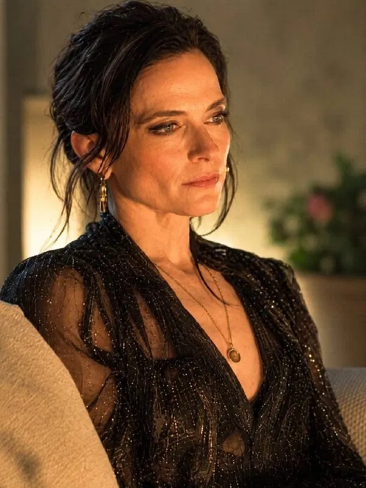

The Original
Single Pot StillMiel de bruyère, poire mûre, une pointe de poivre blanc.
Pour découvrir nos whiskeys, vous devez avoir l'âge légal de consommer de l'alcool dans votre pays de résidence.
Irish Whiskey · Comté de Cork
Distillé sur les rives de la Blackwater
Uisce Beatha — l'eau de vieLa Maison
Sur les rives de la Blackwater, une petite distillerie du XIXe siècle s'éteignait lentement, oubliée des géants industriels.
En 2018, Caoimhe Fitzgerald, enfant de Cork, en reprend les clés. Elle restaure les alambics de cuivre, rouvre les chais de pierre et impose une exigence sans compromis : un whiskey irlandais single pot still, distillé trois fois, vieilli lentement dans l'humidité de la vallée. Une maison indépendante, qui ne doit rien à personne.
Aujourd'hui, Blackwater & Co. se sert dans les clubs les plus fermés de Mayfair et de Soho. Mais chaque goutte reste distillée là où tout a commencé : en Irlande.
Savoir-faire
Le single pot still est la signature historique du whiskey irlandais : un mélange d'orge maltée et non maltée, distillé dans des alambics de cuivre. Nous n'avons rien inventé. Nous avons simplement refusé de simplifier.
Cultivée dans les comtés de Cork et de Waterford, maltée et non maltée, selon la tradition du pot still.
Une eau douce et tourbée, puisée dans la vallée qui donne son nom et sa couleur à la maison.
Trois distillations successives dans nos alambics restaurés, pour un distillat d'une rondeur soyeuse.
Ex-bourbon, oloroso, porto : chaque fût est choisi à la main et suivi jusqu'à sa dernière goutte.
Dans nos chais de pierre, l'humidité de la vallée fait son œuvre. Nous ne pressons jamais un whiskey.
La Collection
Miel de bruyère, poire mûre, une pointe de poivre blanc.
Fruits secs, écorce d'orange confite, cuir et chocolat noir.
Cerise noire, clou de girofle, une finale longue et sans concession.
Tabac blond, figue, embruns du port de Cork. 312 bouteilles.
Le Quiz
Cinq questions, aucune bonne réponse. Seulement la vôtre.
La Fondatrice

Caoimhe Fitzgerald · CorkLa Fondatrice
Née dans les faubourgs ouvriers de Cork, Caoimhe n'a hérité ni d'un titre, ni d'une fortune. Elle a bâti Blackwater & Co. à la force du poignet, en apprenant les chiffres, les marchés et les codes d'un monde qui ne l'attendait pas.
« On m'a conseillé de rendre le whiskey irlandais discret, pour plaire à Londres. J'ai préféré le rendre inoubliable. »
Mécène engagée, elle consacre une part des bénéfices de la maison à la culture et à la mémoire irlandaises.
« Le seul whiskey de Mayfair qui se boit plus lentement que les secrets ne circulent. »
— The Belgravia Chronicle« Une renaissance spectaculaire. Le 18 ans Saoirse est une leçon de patience et d'audace. »
— The Mayfair Ledger« Caoimhe Fitzgerald a fait d'une distillerie mourante la marque la plus convoitée des clubs londoniens. »
— Spirits & SocietyVisites & Dégustations
Irlande
Londres